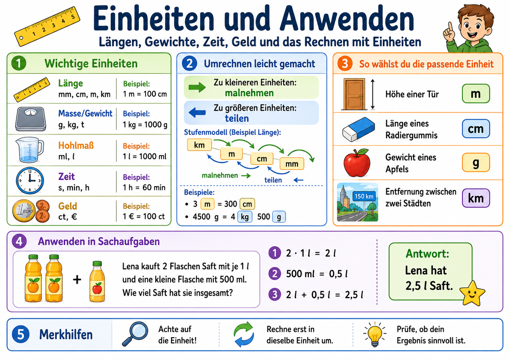

Du lernst Flaechen-, Massen- und Zeiteinheiten sicher umzurechnen und nutzt das Wissen in
alltagsnahen Sachaufgaben. Alle Uebungsbereiche sind dynamisch und koennen unbegrenzt neu erzeugt werden.

Die Infografik dient als visueller Leitfaden. Das Lernkonzept darunter ist eigenstaendig aufgebaut
und auf deinen Unterrichtsverlauf zugeschnitten.
Didaktischer Kern (eigenes Lernkonzept)
Das Modul folgt einem 4-Phasen-Modell: Aktivieren -> Strukturieren -> Anwenden -> Reflektieren.
Dabei bleiben wir nah an den Kompetenzen fuer Jahrgang 5/6 (Gymnasium Niedersachsen):
Groessen passend waehlen, in Einheiten umrechnen, Ergebnisse begruenden und in Sachaufgaben einsetzen.
Aktivieren: Vorwissen mit der Infografik und kurzen Einheitensprints sichtbar machen.
Strukturieren: Umrechnungsregeln je Groesse trennen (Flaeche, Masse, Zeit) und sicher benennen.
Anwenden: Direkte Umrechnungen, Vergleichsaufgaben, gemischte Angaben und Textaufgaben loesen.
Reflektieren: Plausibilitaetscheck, Fehleranalyse und neue Uebungsrunde mit angepasster Schwierigkeit.
Regel-Coach
Waehle einen Bereich und erhalte die passende Regel mit Beispiel.
Lehrplanbezug (Niedersachsen)
Groessen und Messen: Einheiten sachgerecht verwenden, umrechnen, schaetzen und vergleichen.
Flaecheninhalt und Umfang von Rechtecken und zusammengesetzten Figuren im Anwendungskontext nutzen.
Mathematisch modellieren: Sachtexte in Rechnungen ueberfuehren und Ergebnisse bewerten.